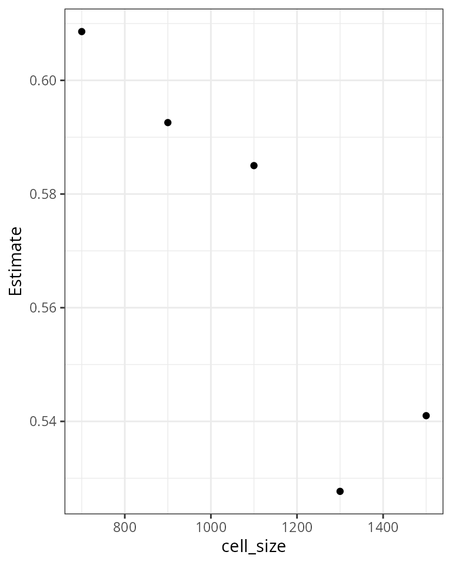

General project setup
We setup a project using a hexagonal canvas with a cell size of 500 km. The project is set in-memory but for a real case study you would like to set path to a persistent location on disk.
We’ll use the wrens dataset which is part of the package.
Raw data: wrens breeding range distribution and life history
head(wrens,3)
#> Simple feature collection with 3 features and 12 fields
#> geometry type: MULTIPOLYGON
#> dimension: XY
#> bbox: xmin: -9816.989 ymin: 2146.502 xmax: -7998.838 ymax: 3641.424
#> CRS: +proj=eck4 +lon_0=0 +x_0=0 +y_0=0 +datum=WGS84 +units=km +no_defs
#> ID sci_name com_name subspecies clutch_size
#> 1 1 Campylorhynchus_jocosus boucard's wren 1 3.5
#> 2 2 Campylorhynchus_gularis spotted wren 1 4.0
#> 3 3 Campylorhynchus_yucatanicus yucatan wren 1 3.0
#> male_wing female_wing male_tarsus female_tarsus body_mass data_src
#> 1 73.10 70.30 22.9 22.2 27.6 1,1,1,1,1,1,3
#> 2 74.00 71.75 24.0 24.0 30.1 1,2,1,1,1,1,3
#> 3 76.55 71.35 25.1 23.6 35.5 1,2,1,1,1,1,3
#> geometry breeding_range_area
#> 1 MULTIPOLYGON (((-9106.223 2... 68419.50 [km^2]
#> 2 MULTIPOLYGON (((-9056.978 3... 237563.90 [km^2]
#> 3 MULTIPOLYGON (((-7998.838 2... 11366.63 [km^2]
Case study 3: The influence of cell size on body size ~ species richness slope
1. assemblage level median body size ~ species richness slope for varying cell sizes.
cellSizes = seq(from = 700, to = 1500, length.out = 5)
FUN = function(g) {
options(rmap.verbose = FALSE)
con = rmap_connect()
rmap_add_ranges(con, x = wrens, ID = 'sci_name')
rmap_prepare(con, 'hex', cellsize=g)
rmap_add_bio(con, wrens, 'sci_name')
rmap_save_map(con)
rmap_save_map(con, fun = 'median', src='wrens', v = 'male_tarsus', dst='median_male_tarsus')
m = rmap_to_sf(con)
# lm at assemblage level
o = lm(scale(log(median_male_tarsus)) ~ sqrt(species_richness), m) %>%
summary %>% coefficients %>% data.frame %>% .[-1, ]
o$cell_size = g
options(rmap.verbose = TRUE)
o
}
o = lapply(cellSizes, FUN) %>% rbindlist
2. Plot regression parameters for different cell sizes
Most of the variation here is due to spatial autocorrelation, a proper analysis requires a spatial model.
